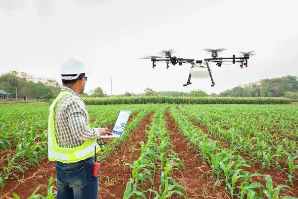

Unindo tecnologia moderna e natureza em um só lugar
Conheça as inovações que estão revolucionando a agricultura, aumentando a produtividade e promovendo a sustentabilidade. Explore soluções que conectam o campo ao futuro, facilitando o trabalho dos produtores rurais.
A inovação tecnológica no campo, como agricultura de precisão, IoT, inteligência artificial e biotecnologia, tem transformado a produção rural, tornando-a mais eficiente, sustentável e produtiva. Essas tecnologias ajudam a otimizar recursos, aumentar a produtividade e reduzir impactos ambientais. Com isso, o setor agrícola se adapta aos desafios globais, como mudanças climáticas e escassez de recursos.
A união entre o rural e o urbano fortalece nossa cultura e promove o desenvolvimento sustentável. Celebramos essa conexão que enriquece nossas vidas.
Participe da Festa